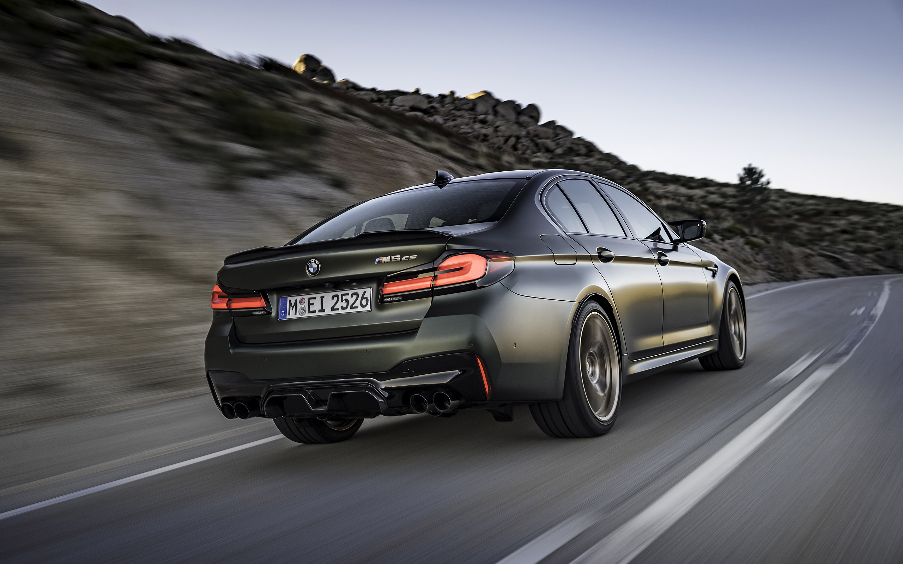

Motoarele pe benzină
Motoarele pe benzină sunt cele mai răspândite și populare motoare din lumea automobilelor. Acestea folosesc benzină ca și combustibil, iar procesul de ardere al combustibilului are loc într-un cilindru al motorului, unde o bujie produce o scânteie care aprinde amestecul de aer și benzină, generând astfel forța necesară pentru a pune în mișcare mașina.
BMW
BMW este o companie producătoare de automobile din Germania. Compania a fost înființată în anul 1916 și își are sediul central în orașul München.
BMW este cunoscută pentru designul său elegant și performanța impresionantă a mașinilor sale. Printre cele mai populare modele ale companiei se numără Seria 3, Seria 5 și Seria 7.
Motoarele BMW sunt recunoscute pentru puterea și rafinamentul lor. Acestea includ motoare pe benzină și motoare diesel, precum și motoare hibride. BMW oferă, de asemenea, opțiuni de transmisie manuală și automată pentru majoritatea modelelor sale.
În plus, BMW a introdus recent și o serie de mașini electrice și hibride plug-in, inclusiv i3 și i8. Aceste mașini oferă performanță excelentă, dar și o autonomie mai mare decât alte mașini electrice.
Vezi modele